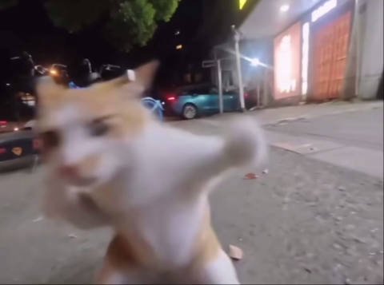
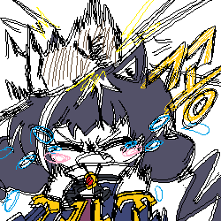
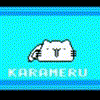
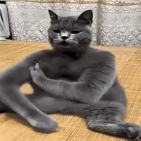
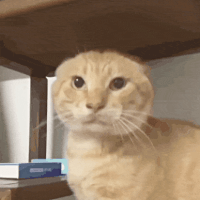
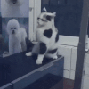

너무 빠름

너무 빠름
뻐큐 안하잖아
진짜임 ㅇㅇ
이거 맏다
방금 길냥이한테 롸우우니가니가쩝쩝 조졌다가 현피개털려서 답변 못한다
체크훅 야무지더라


이쪽이 좀 더 빠른듯







근데 쟤가 기존 신체 능력 그대로 보유한 채 사람 크기가 된다면 인간은 처발리겠지?
라고 쓰고 생각해보니까 호랑이가 그런 존재였네...
표범이 사람 반만한데
ㄷㄷ..
호랑이도 너프임
질량과 근량이 비례하는게 아니라서
고양이 동체시력은 0.015
인간은 0.2
고양이들 앞발 속도가 호랑이 질량에서 나오면 충격파 터질듯
너는 바퀴벌레가 세상을지배하는만화
테라포마스를 보도록해
저 라이트 어퍼 스트레이트 콤보 왜 유행탄거임? 멋있어서?
스티브 애옹;
캣파이트 미야옹~
이거진짜예요? ㄷㄷㄷ